A Day in the Life of a Delivery Robot
Description
The Game Design Competition was my senior capstone project at Oregon State University, in which my team created "A Day in the Life of a Delivery Robot." Our team was tasked with developing a driving simulator centered around a single-driver vehicle of our choice. Other objectives included incorporating Advanced Driver Assistance Systems (ADAS) features, Artificial Intelligence (AI) traffic, and realistic visual elements.
Our vision was to simulate the Starship robots that are used on Oregon State University's campus, tasking users with delivering food orders to students. The robot the player controls has sensors and ADAS features that are activated by the surrounding AI pedestrians, vehicles, and trains. To maintain a consistent and realistic theme, we decided to create a part of the Oregon State University campus as our driving environment. The main goal of the game is to avoid being hit by obstacles while driving your delivery robot, and still deliver your food order to its location within the allotted time. For more information on gameplay, processes, and a downloadable .exe build, visit our Github page!
My Role & The Process
Project Type: Academic, Group Project Role: Designer (Level/UI/System), Programmer, Artist Software: Unity, Blender, Quixel Mixer Languages: C#
My main role in this project was to develop the map environment for our robot to drive in. In attempting to create an accurate representation of part of the Oregon State University campus, I took over one hundred images for reference and textures. Using Quixel Mixer and an online website to synthesize images for seamlessness, I was able to adjust the previously taken photos into usable textures. In Blender, I developed all building, street, and sidewalk models from scratch, trying to keep the geometry low-poly to help with performance. Most of the generic detail objects were found as free online models for fair use, including items such as trees, bushes, pedestrians, cars, goals, and the train.
As our small team struggled to find time to implement every feature we wanted, I began taking on other roles as well. While my partners worked on the ADAS features, pedestrian and vehicle pathing, and the delivery system, I designed the user interface. The logos and clip art used were sourced online to save time, but I made sure to place each bit of information in a way that would assist rather than distract the user. Designing the UI also included working on the backend to ensure each component was updated properly during gameplay.
Other smaller tasks I completed included creating and balancing the scoring system, implementing lighting into our scene, and developing certain robot mechanics such as the boost, reset/flip, and camera display options. My main goals towards the end of our project were to implement as many small "fun" features or visuals as possible to entertain our audience, as this project would be presented at our Engineering Expo. My final addition was a robot customizer screen that allowed users to add silly stickers or hats to their robots, giving each player a unique robot!
What I Learned & What I Would Improve
This game project was very involved, but it was very rewarding in the end, especially when showing it to family and peers. Working as a group of four students with other classes and jobs, we had little time to communicate and work effectively as a team. This was easily the hardest part for me, but I think our goal of developing a fun and short game was successful in the end.
In terms of technical knowledge, I significantly improved my skills with Blender, particularly in modeling, texturing, UV editing, and exporting. I now understand how to synthesize textures in different applications and edit them in Quixel Mixer. Also, learning about seamless textures, tiling, and techniques like adding noise and random rotations has helped minimize repetitive patterns on my created surfaces. In Unity, I learned about using mesh colliders on imported objects and their interactions with rigid bodies based on topology. I improved my programming skills in C#, became better at testing features that need to be balanced (partly through conducting playtests), and learned how to do lighting.
Overall, I think there are a lot of necessary improvements for this project if it were to be revisited in the future. With our time crunch and poor communication habits, the final version of the game has several large bugs and poor performance. Features added towards the end did not have enough time to be properly tested, the map has a couple of collision issues, and the difficulty was harder than intended. With more time, better planning, and an in-sync team, I would love to implement a larger map, a better physics system, fix bugs, balance more appropriately, and adjust scenes for better performance.
Final Version Screenshots
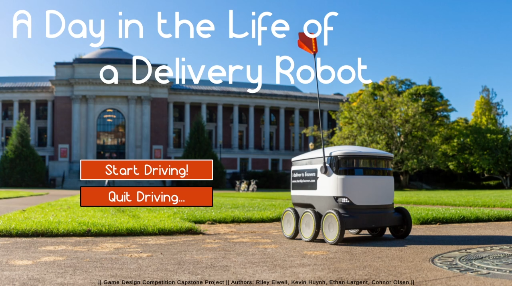 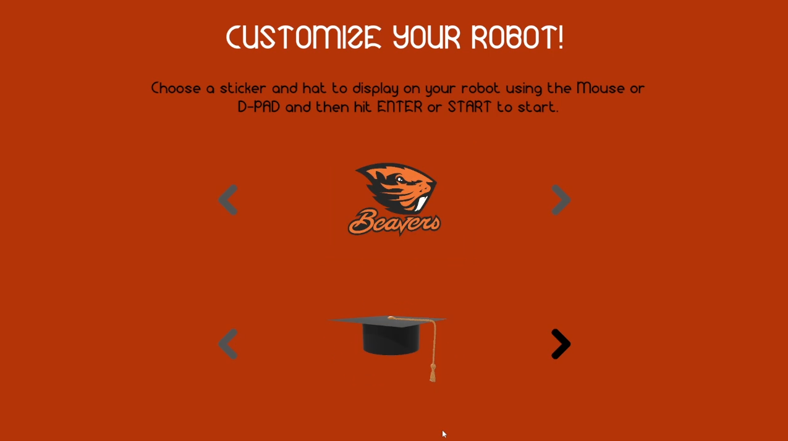 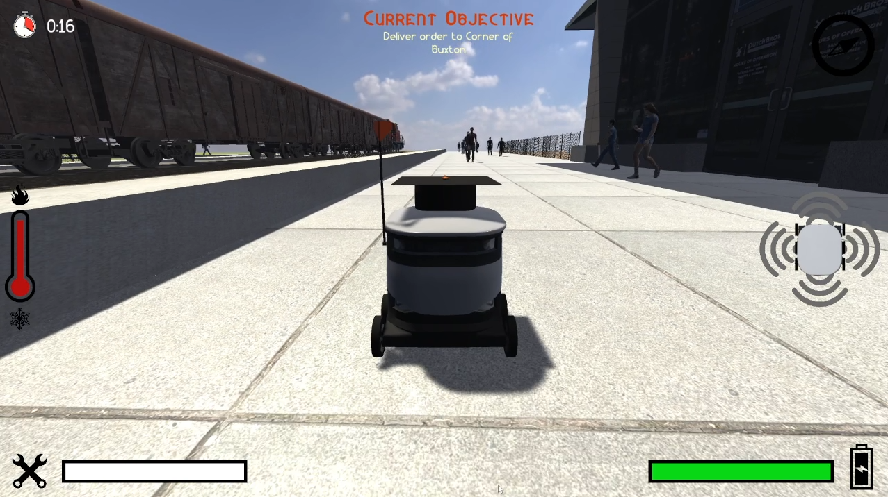 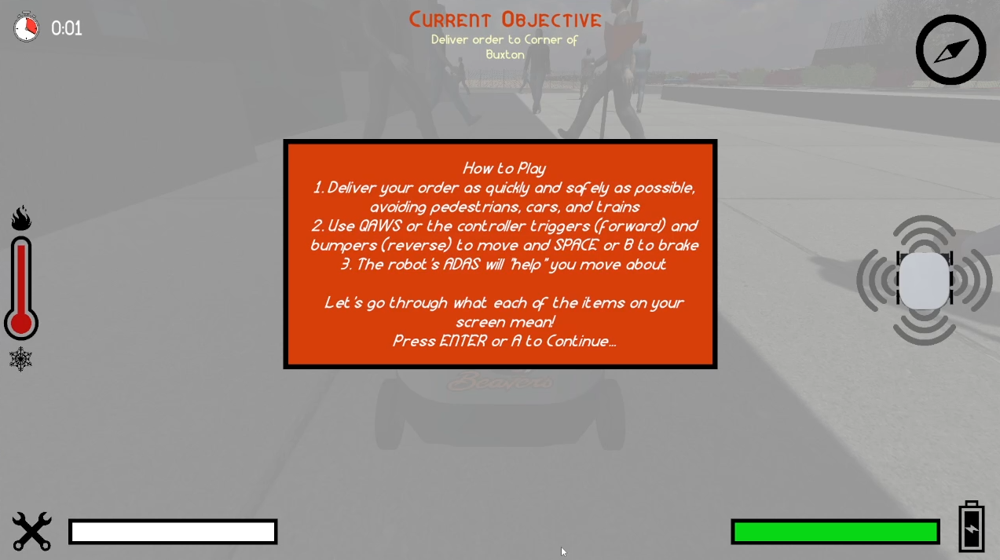 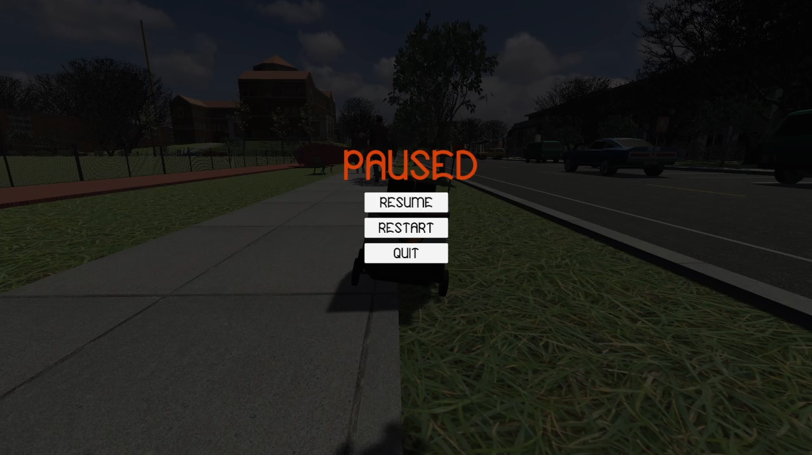 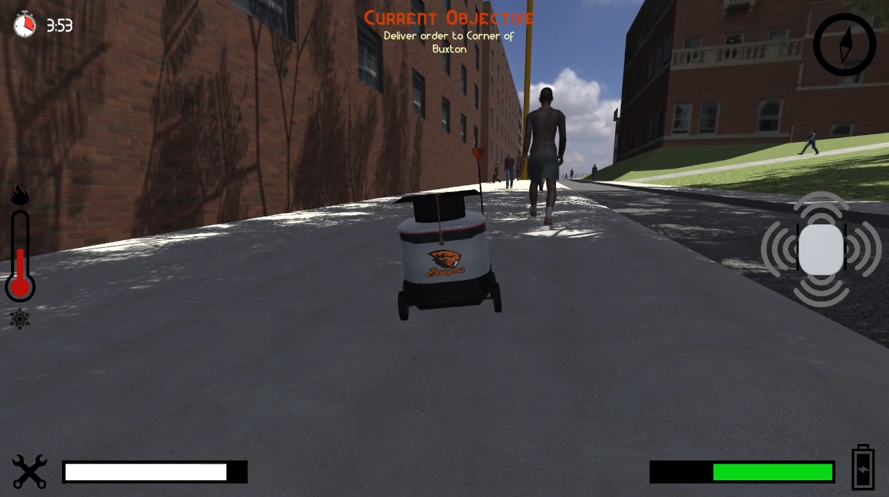 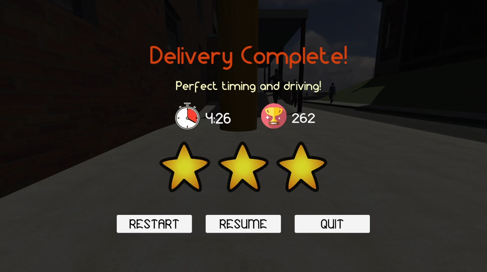 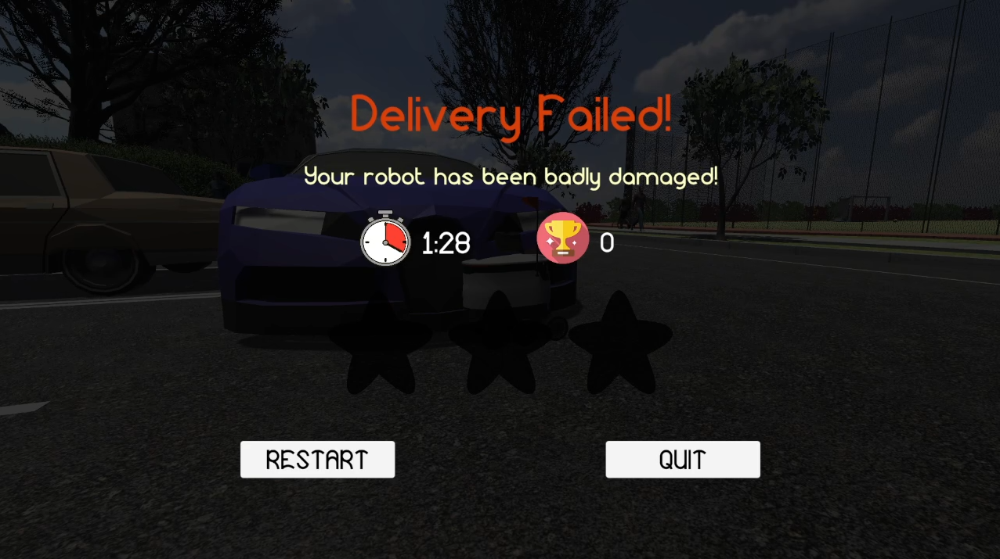 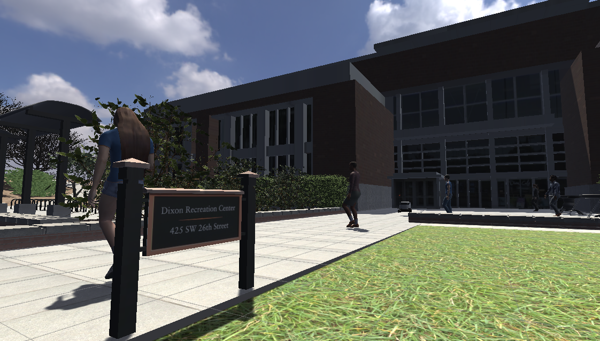
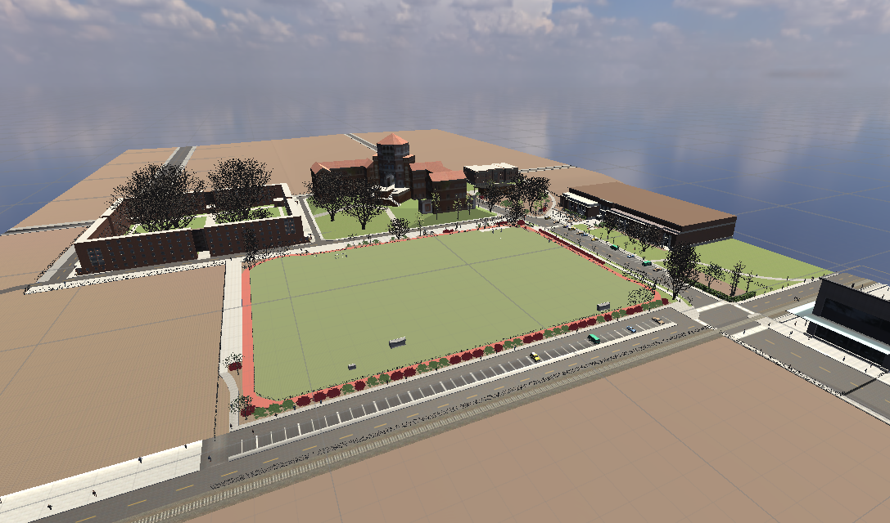
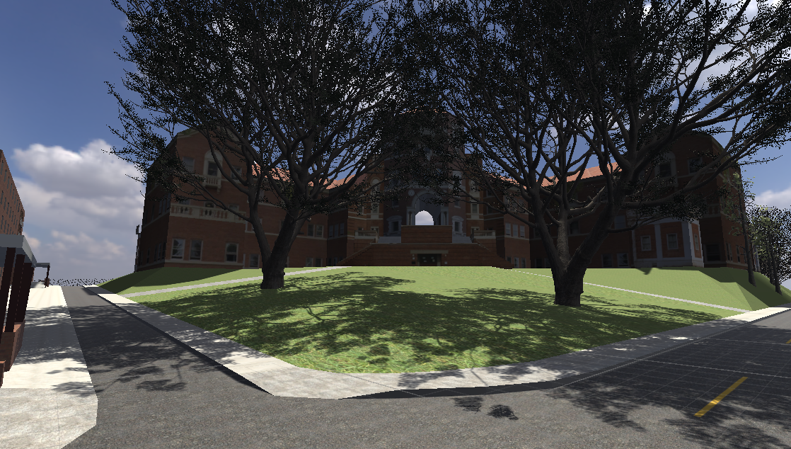
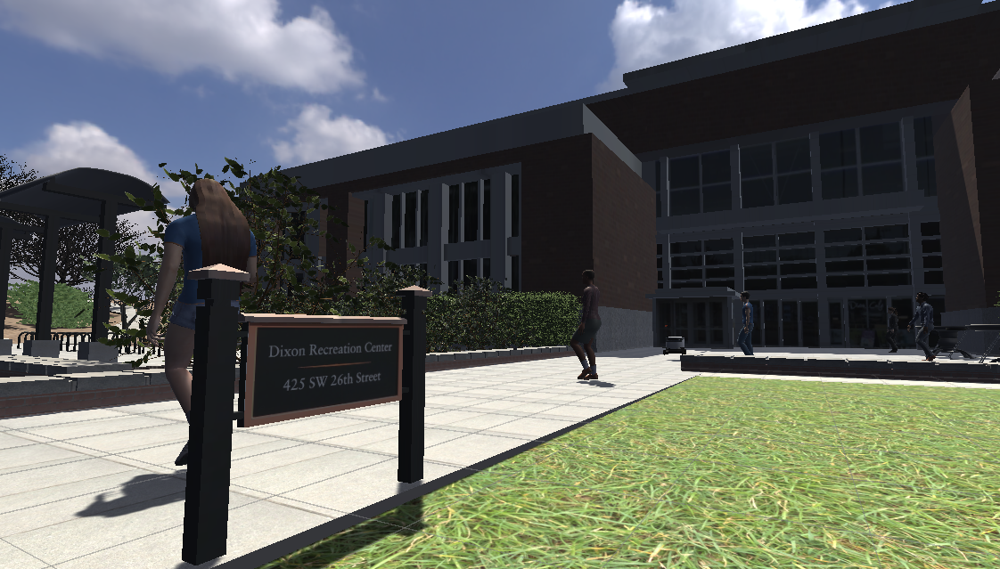
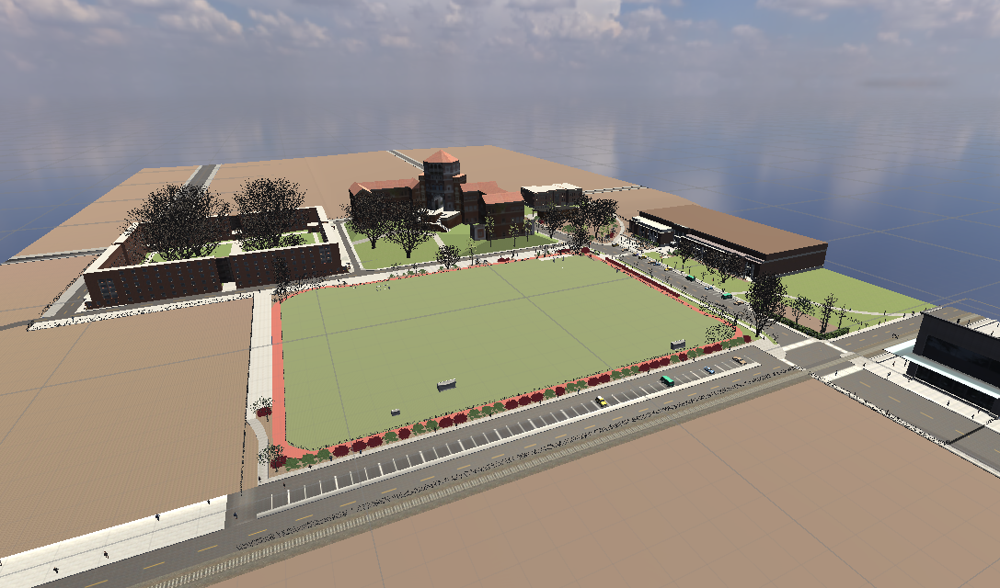
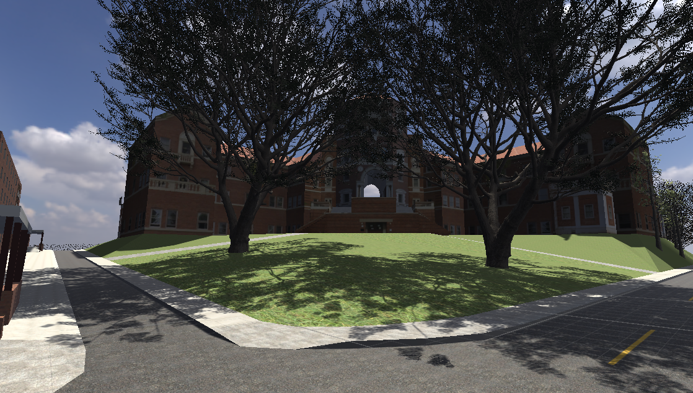